1. From Visual Studio, go to the File menu, select New and then click Project, to create a new Windows Application named ScheduleSample.
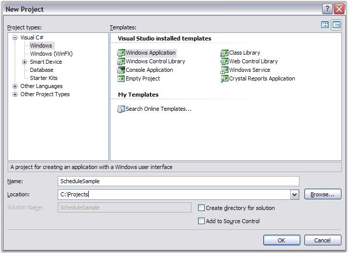
Figure 15: Creating a new Windows Application
2. When the Visual Studio Designer opens, drag the ScheduleControl from the Syncfusion Tab onto the Form.
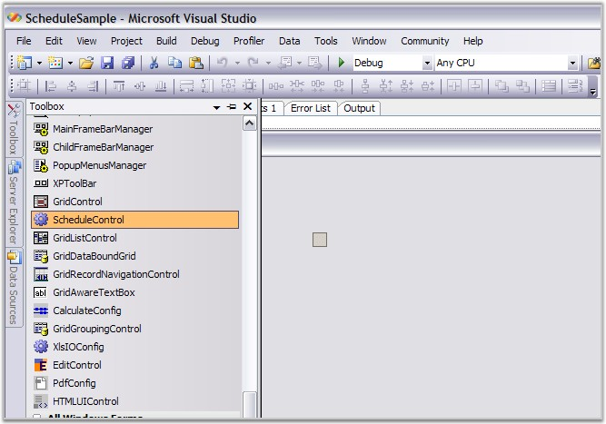
Figure 16: Dragging a ScheduleControl onto the Form
3. The ScheduleControl will show on the design surface. Below is a typical display of this. Notice the Appearance property in the property grid. This is the object that has many properties that affect the appearance of the ScheduleControl.
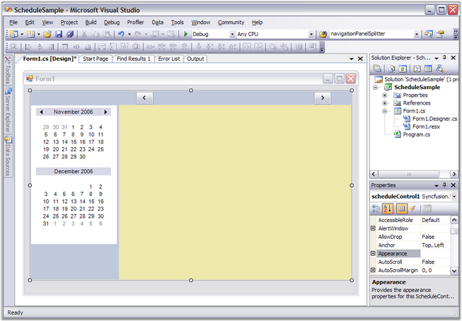
Figure 17: The ScheduleControl on the Design Surface
4. Add a Form1_Load handler to the Form1.cs file by double-clicking on the Form that is not covered by the ScheduleControl. This should display a code window showing code like this.
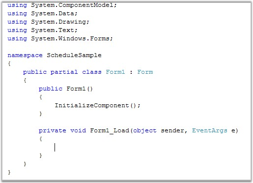
Figure 18: Empty Form1_Load method added by double-clicking the Form in the Designer
5. Now add an existing file to this project, SimpleScheduleDataProvider.cs (or impleScheduleDataProvider.vb if you are using VB.NET).
This file defines several classes that implement the interfaces that the ScheduleControl needs to manage the data associated with the appointments that will appear in the calendar.
These interfaces are discussed in detail later in this UserGuide.
For now, just use the implementation provided in the SimpleScheduleDataProvider.cs file. This file ships as part of the \Syncfusion\Essential Studio\5.x.x.x\Windows\Schedule.Windows\ Samples\2.0\ScheduleSample sample.
Drill down to this folder, and add this file to your project by using the Solution Explorer window as shown here.
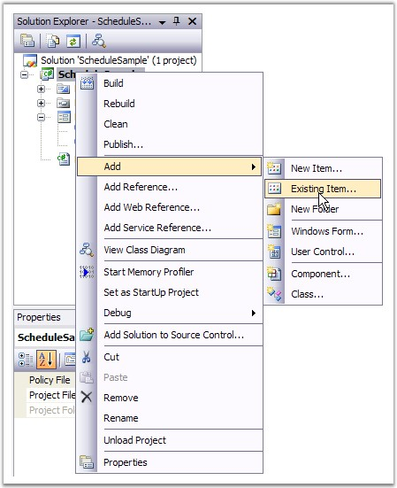
Figure 19: Menu selection showing how to add an existing file to the Project
6. Here, you can find the SimpleScheduleDataProvider.cs file in the \Syncfusion\Essential Studio\5.x.x.x\Windows\Schedule.Windows\ Samples\ 2.0\ScheduleSample\CS folder. Drill down to this folder and add this file to our project.
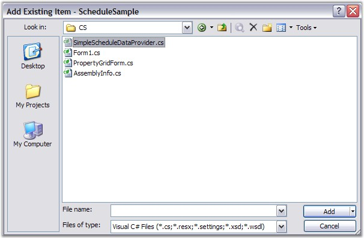
Figure 20: Adding the SimpleScheduleDataProvider.cs file to the Project
7. After adding the file containing our SimpleScheduleDataProvider.cs code, add some code to your Form.cs to provide data support to your ScheduleControl.
i. The first thing to do is to add a using statement to allow us to reference the class names in the SimpleScheduleDataProvider.cs file without adding the Namespace used in that file.
The other is added in the Form_Load code to hook up the data support.
ii. In the Form_Load, create an instance of the DataProvider and a MasterList to hold the data.
iii. Then set some properties to provide a filename, the ScheduleViewType for the initial display and the DataSource property for your ScheduleControl.
iv. Copy this code to your Form1.cs file. (If you are not using the 2.0 FrameWork, remove the partial keyword.)
|
[C#]
using System; using System.Collections.Generic; using System.ComponentModel; using System.Data; using System.Drawing; using System.Text; using System.Windows.Forms; using Syncfusion.Windows.Forms.Schedule; using GridScheduleSample;
namespace ScheduleSample { public partial class Form1 : Form { public Form1() { InitializeComponent(); }
private void Form1_Load(object sender, EventArgs e) { SimpleScheduleDataProvider data = new SimpleScheduleDataProvider(); data.MasterList = new SimpleScheduleItemList(); data.FileName = "default.schedule"; this.scheduleControl1.ScheduleType = ScheduleViewType.Month; this.scheduleControl1.DataSource = data; } } } |
8. Now press F5 key to compile and run your application. A screen similar to this one should appear.
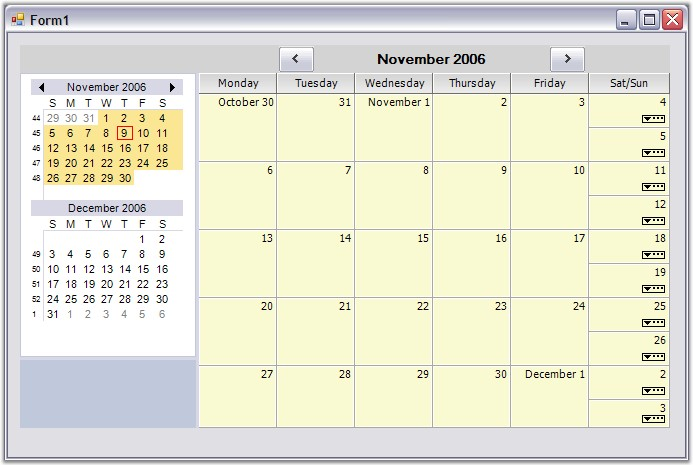
Figure 21: A Month View Schedule displayed in the Sample Application
9. To change the Month view to a Day view, right-click the ScheduleGrid area of the ScheduleControl to display a ContextMenu and select Day.
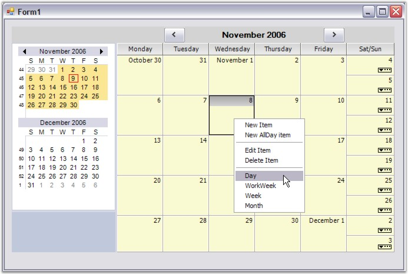
Figure 22: Using the ContextMenu to change the ScheduleViewType
10. Here is the Day view that appears after the execution of the ContextMenu selection done in step 9.
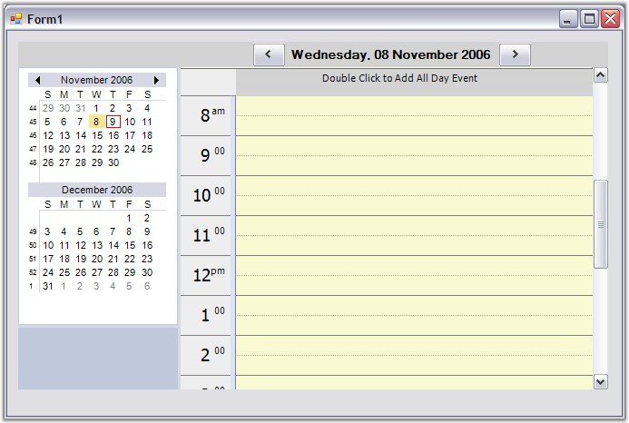
Figure 23: The Day view resulting from the ContextMenu
11. Double-click one of the time slots on the ScheduleGrid in the ScheduleControl. This action will display a new appointment screen where you can enter a new schedule item as shown below.
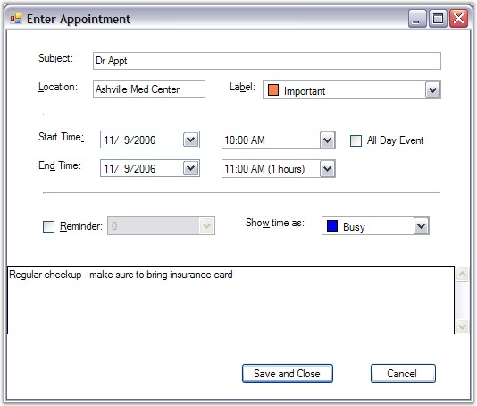
Figure 24: A filled-in New Appointment Screen
12. Clicking the Save and Close button on the Appointment screen will re-display the Day view ScheduleControl with the new appointment displayed. If you hover over the appointment in the ScheduleGrid, a tooltip will display as shown below.
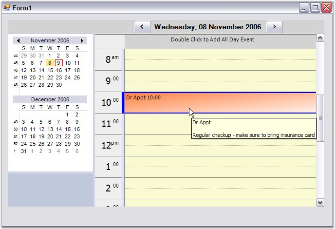
Figure 25: The New Appointment with a ToolTip Displayed
13. Click the Close button on the form system menu on the upper-right corner of the form. Since the data has been modified in this ScheduleControl, a dialog will appear as below, asking whether you want to save these changes to a disk file. Click Yes to save the changes.
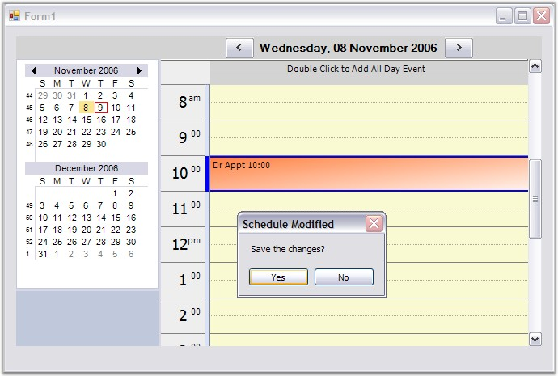
Figure 26: A Prompt is displayed as you try to close the Modified Form
14. Next modify our Form_Load code to conditionally reload the saved data if the file is present on the disk. Here is the new code. Copy this code to your Form1.cs file. Notice that you have added a "using" statement to reference the System.IO namespace in addition to the new code in the Form1_Load. (If you are not using the 2.0 FrameWork, remove the partial keyword)
|
[C#]
using System; using System.Collections.Generic; using System.ComponentModel; using System.Data; using System.Drawing; using System.Text; using System.Windows.Forms; using Syncfusion.Windows.Forms.Schedule; using GridScheduleSample; using System.IO;
namespace ScheduleSample { public partial class Form1 : Form { public Form1() { InitializeComponent(); }
private void Form1_Load(object sender, EventArgs e) { SimpleScheduleDataProvider data; if (File.Exists("default.schedule")) { data = SimpleScheduleDataProvider.LoadBinary("default.schedule"); data.FileName = "default.schedule"; } else { data = new SimpleScheduleDataProvider(); data.MasterList = new SimpleScheduleItemList(); data.FileName = "default.schedule"; } this.scheduleControl1.ScheduleType = ScheduleViewType.Month; this.scheduleControl1.DataSource = data; } } } |
15. As our last step, compile and run the application again. The Month view should reappear but, this time the appointment you added earlier should appear.
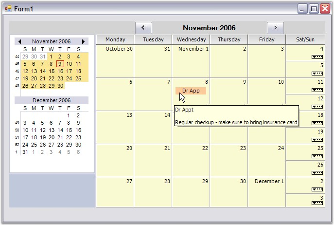
Figure 27: The Month View showing the previously saved Appointment